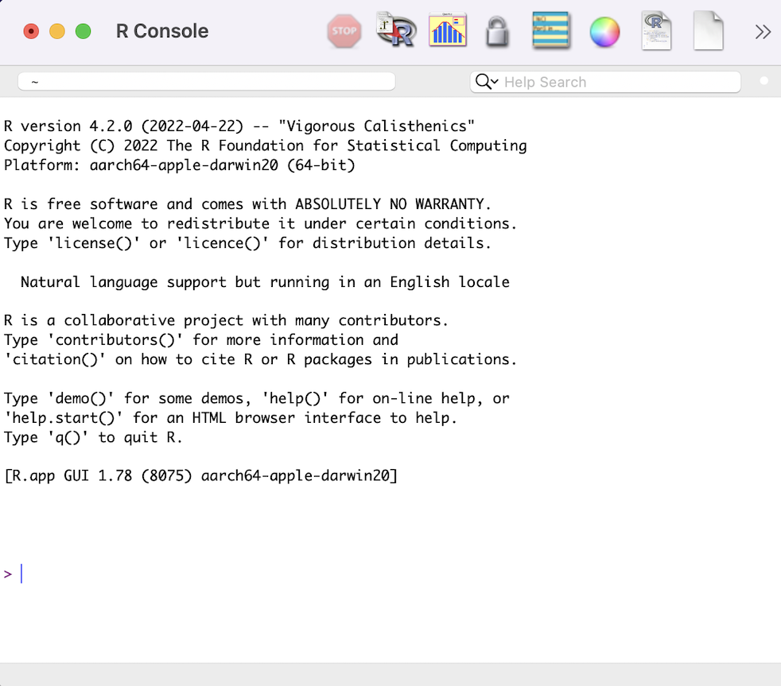
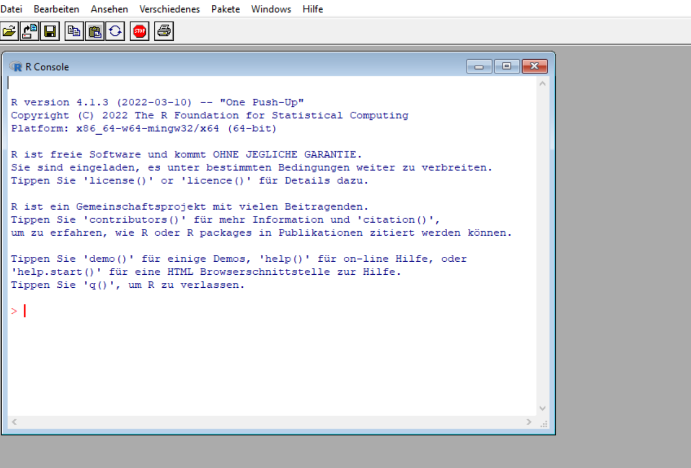
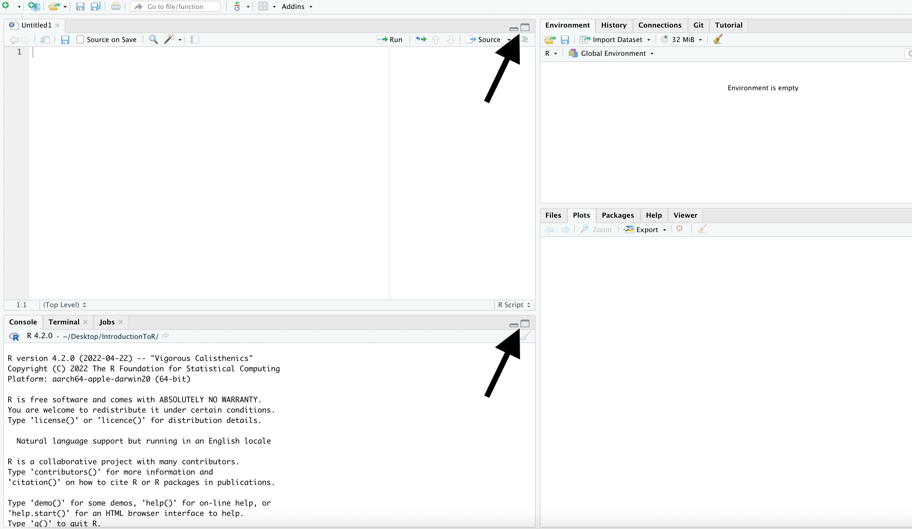
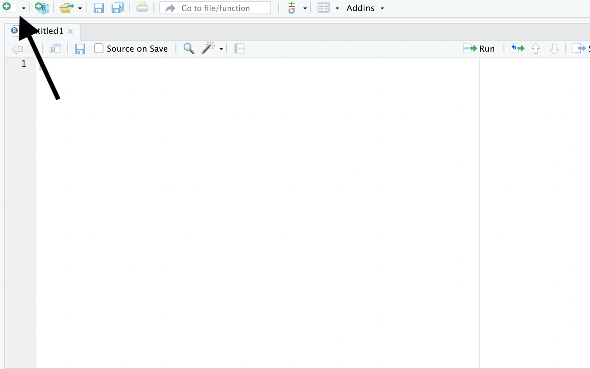

print("Hello, world!")Getting Started
Getting started with R
This is a brief introduction to R. It is supposed to guide you through the installation of R and R Studio.
What is R?
R is a programming language and a free, open-source software for statistical computing and graphing. It is widely used in academia and industry alike. Beyond its base functionality, R can be extended through packages. This allows for additional flexibility in its application. Applications include reproducible transfer, management, analysis, modeling, and presentation of data.
Installing R
You can download the most recent version of R through the Comprehensive R Archive Network. The Comprehensive R Archive Network (CRAN) is the official network that stores and releases the most up to date versions of R. If you use a Windows operating system, please follow this link to download the most recent version of R. If you are using a Mac operating system, please follow this link to download the most recent version of R. Please complete the installation on your local computer by opening the respective file from your Downloads folder. To make sure you installed R successfully, please open the program on your computer. The window should look similar to the images below. If you are using a Mac operatings system, your R window should look similar to the image on the left. If your computer uses a Microsoft Windows operating system, your R program should look like the screenshot on the right. Please note that the first line diplays the version number of R. Your version might differ from the one shown in the screeenshot.


What is R Studio?
R Studio is separate from R. In fact, it is an integrated development environment, or IDE, that serves as an editor, and thus makes for a more user-friendly application of R. R Studio is not limited to the use of R, however. You can create Markdown documents, Shiny web applications, C++, Python, SQL, and many more file types using R Studio. For the workshop, we will focus on R files.
Installing R Studio
You can download the free non-commercial version of R Studio here. Please click the button to download the version that matches your operating system. Once the download is complete, please open R Studio and complete the installation. Importantly, for R Studio to run, you need to install R first!
The screenshot below should reflect what you are seeing when first opening R Studio. As you can see the R Studio user-interface is split into four panes, or tiles. You can hide and unhide each pane by clicking on the window symobols highlighted by the arrows in the screenshot. The small window hides the pane, and the large widnow unhides it.

Using R Studio
As a default setting R Studio shows the console in the bottom left corner. As you can see, the console looks similar to the R program that you installed earlier. Everytime you open R Studio, the console displays the version of R you are currently using. In the previous screenshot, we are using R version 4.2.0. The console allows you type and execute R code. Be aware, however, that code you write in the console is not reporducible. It will not be saved when you close your R session. You can however, see the previously executed code in the top right pane by clicking on the ‘History’ tab.
In the top left corner you find the source pane. Typically, this is where you write your reproducible code, and view files, or tables. If you wish to open a new code file, you click on the symbol in the top left corner, as shown in the picture below or press Ctrl+Shift+N. Next, you will see a selection of possible file types. To the right of the file symbole, you find the project symbol. Projects are overarching structures that organize your files.

The top right pane displays your environment. The environment contains functions, data frames, and variables that you create. You can open and expand elements in the environment by clicking on them.
Finally, the bottom right pane shows the files included in your working directory. It also shows the plots you have created, the installed, and loaded packages, documentation, and the Viewer. Each function of the pane can be selected by clicking on the respective tabs.
Hello, world!
To run your first bit of code and to familiarize yourself with the console and the source pane copy the following code in each pane.
To run code in the console simply press Enter. After pasting the code in the source pane press Ctrl +Enter. To run code in the source pane, you can alternatively press run in the top right corner of the source pane.
Congratulations, you have executed your first line of R code!
The next section introduces you to workflow in R and Stata, as well as some basic data types.